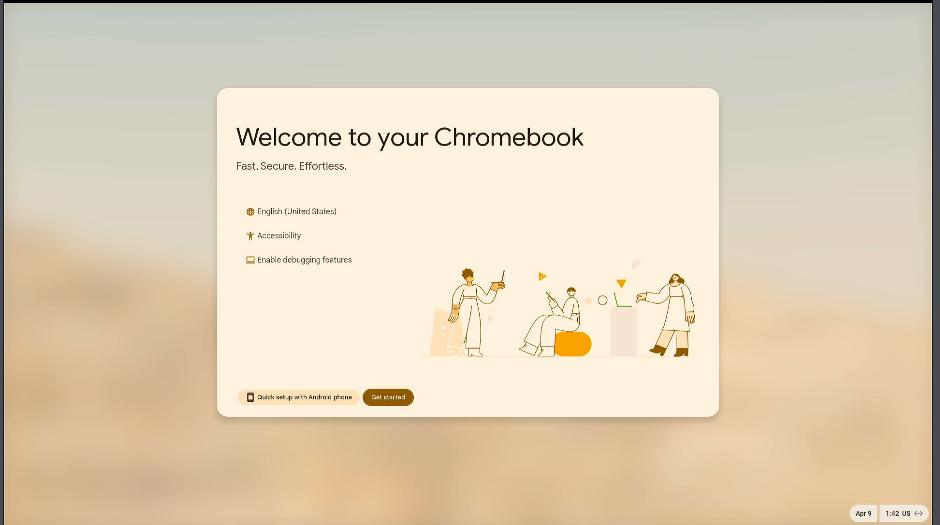
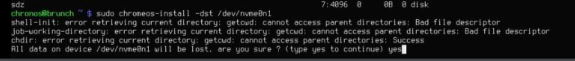
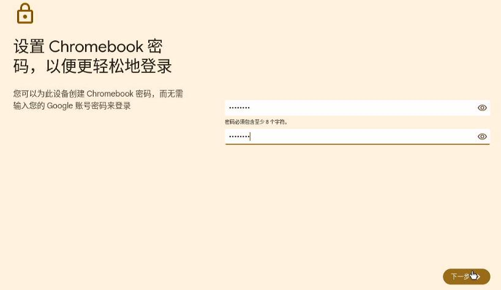

20250409
1. uefi recovery
Steps:
fs0:\
edit FS0:\startup.nsh
"FS0:\EFI\fuck\grubx64.efi"
Save
exit
reset
aarch64:
fs0:\
edit FS0:\startup.nsh
"FS0:\EFI\debian\grubaa64.efi"
Save
exit
reset
2. openwrt tips
refers to https://gist.github.com/pjobson/3584f36dadc8c349fac9abf1db22b5dc.
Use rescuezilla for writing into the image.
Use gparted for enlarge the root disk.
sed -i 's/downloads.openwrt.org/mirrors.ustc.edu.cn\/openwrt/g' /etc/opkg/distfeeds.conf
opkg update
opkg install vim-full nano usbutils pciutils
opkg install bash
sed -i 's/ash/bash/' /etc/passwd
opkg install ca-bundle ca-certificates openssl-util
mkdir ~/bin && cd ~/bin
wget https://raw.githubusercontent.com/pjobson/bash-completion/master/bash_completion
chmod +x ~/bin/bash_completion
echo ". ~/bin/bash_completion" >> ~/.profile
opkg install adblock luci-app-adblock
opkg install git git-http ca-bundle wget
opkg install kmod-iwlwifi iwlwifi-firmware-iwl6000g2
Install passwall:
https://github.com/xiaorouji/openwrt-passwall/releases
$ ls
luci-24.10_luci-app-passwall_25.4.1-r1_all.ipk
luci-24.10_luci-i18n-passwall-zh-cn_25.091.17880.830805a_all.ipk
passwall_packages_ipk_x86_64.zip
$ unzip *.zip
$ opkg remove dnsmasq
$ mv /etc/config/dhcp /etc/config/dhcp.bak
$ opkg update
$ opkg install kmod-nft-socket kmod-nft-tproxy
$ opkg install *.ipk
3. chromeos
Boot from usb disk:

Chrome OS OOBE:

Ctrl + Alt + F2, for entering TTY 2:

Login with chronos, using lsblk for detecting the disks, then install system:

sudo chromeos-install -dst /dev/nvme0n1

sudo reboot for restarting system.
Setup:

Enable debug:

Personal use:



Install linux:


Enable adb:


Install adb:


4. enable ssh wan
enable ssh wan on openwrt:
To /etc/config/firewall add:
config rule
option name Allow-SSH-WAN
option src wan
option proto tcp
option dest_port 22
option target ACCEPT
option family ipv4
Then:
/etc/init.d/firewall restart